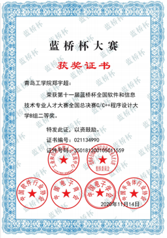

△蔡林辉阳荣获全国总决赛一等奖
△蔡林辉阳荣获全国总决赛一等奖

△郑宇超荣获全国总决赛二等奖
蓝桥杯是中国最大的IT类大学生竞赛，每年吸引着来自全国各地高校的优秀学子参与。这项竞赛旨在培养学生的创新思维和实践能力，对于提升学生的计算机专业技能和综合素质起到了重要的推动作用。
在这次国赛中，我校的学生经过激烈的角逐，克服了种种困难和挑战，最终以出色的表现脱颖而出，荣获了蓝桥杯国赛的优秀奖项。这是对他们扎实的专业知识和出色的团队合作能力的极高肯定，也是我校计算机教学和培养模式的成功实践。
除了团队比赛的成功，我校代表队的个人选手也表现出色。他们在个人赛中展示了自己的优秀才能和技巧，多名选手成功晋级并获得了不同级别的奖项。他们经过了漫长的备战和刻苦训练，顽强拼搏，最终收获了应有的成果。他们的成功不仅是他们个人的骄傲，也是我校教育教学水平的体现。这使我校学生对学校教育充满信心。
这次比赛不仅让同学们展示了自己的才华，也提升了他们的编程能力和团队合作意识。我们对他们的成功感到自豪，并期待他们在未来更多的比赛中再次取得优异成绩。